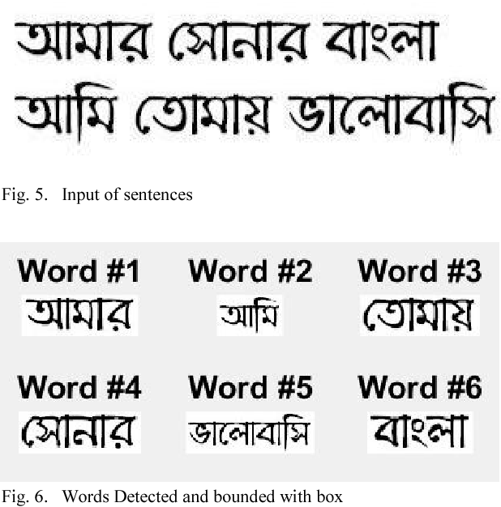
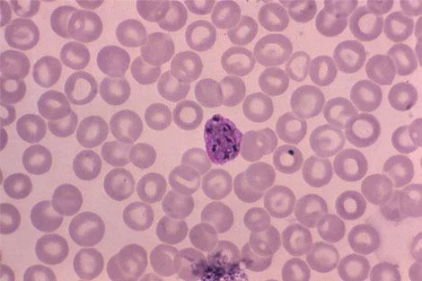

Software Developer | Machine Learning Ehthusiast | Learner
Hi, I'm Faisal Islam
a creative problem solver,
tech explorer, and a proud Computer Science graduate.
Join me as we push the boundaries of imagination and craft extraordinary digital solutions together.
My Projects
 Check My GitHub
Check My GitHub

Bengali News Classification using GRU(Gated Recurrent Unit)
A deep learning model to identifying and categorizing the Bengali news headline.
Tools and Technologies:
Python, Google Colaboratory
See More...

Malaria Diagnosis using CNN
Developed a precise Malaria Diagnosis System utilizing Convolutional Neural Networks (CNN), enabling accurate detection of malaria parasites in
microscopic blood cell images through advanced deep learning techniques
Tools and Technologies:
Python,Tensorflow,Google Colaboratory
See More...
Kid Nursery Management App
Designed and built an efficient Kid Nursery Management System for daycare centers to streamline kid records, financial tracking, and activity management.
Tools and Technologies:
Java, sqlite, Android Studio
See More...
Safe & Secure Password
Developed a Java-based password security system using Bloom filters, hashing functions, and similarity metrics to prevent weak and similar passwords, enhancing user security.
Tools and Technologies:
Java
See More...
Bengali News Classification using GRU(Gated Recurrent Unit)
Crafted a sophisticated Bengali News Classifier leveraging GRU architecture, embedding intelligence, and bidirectional context, fine-tuned for robust performance validation.
See the Code
Key Features:
- Bengali News Classifier: Crafted a dynamic GRU model for accurate Bengali news classification..
- Smart Embedding: Enhanced understanding with intelligent text preprocessing and semantic embedding.
- Double Impact:Implemented bidirectional GRU and attention mechanism for a nuanced understanding of context. .
- Performance Boost: Fine-tuned hyperparameters and validated robustness through cross-validation..
Tools and Technologies:
- Dataset Source:Kaggle
- Framework: Tensorflow and Google Colaboratory
This significant project involved designing and implementing the Machine learning model, serving as the final requirement for my bachelor's degree. As
the team leader, I guided a group of two members throughout the project, gone through various dataset and experimented with various ML methodologies. Presented
this project as our final year thesis paper. Also learned about paper reveiw process and research method.
Results: Got good result on the testing data and still trying to optimize this.
Close
Digital Library Management System
Implemented an accurate Malaria Diagnosis System using Convolutional Neural Networks (CNN), leveraging deep learning to analyze microscopic blood cell images and detect
the presence of malaria parasites with high precision..
See the Code
Key Features:
- User Roles: Librarian and Borrower, with respective functionalities.
- Resource Management: Librarians can insert, update, and search resources.
- Borrower Interaction: Borrowers can explore, borrow, and extend borrowing.
Tools and Technologies:
- Development Languages:
- Database Management:
- Development Tools:
- Local Server Environment:
I completed this assignment as part of one of my university courses. The task was to create a web application for managing libraries within a two-week deadline. I successfully designed the database, implemented the required functions, and utilized PHP for backend development. While I focused more on functionality than UI due to time constraints, I managed to complete the project with a score of 70%.
Results: Scored 70%
Close
Kid Nursery Management System - A Comprehensive Solution for Childcare Providers
The Kid Nursery Management System is an advanced and user-friendly application designed to streamline and automate the administrative tasks of a childcare center or kid nursery. With a focus on enhancing efficiency and improving parent-staff communication, this system empowers childcare providers to deliver high-quality care and services to young children and their parents.
See the Code
Challenges:
- Database Work: Setting up a robust and efficient database system to handle large amounts of childcare data and ensuring data integrity.
- Generating Statements: Designing a flexible and accurate statement generation module that caters to individual, collective, and profit statements.
- User Search: Developing an efficient search functionality to quickly retrieve specific user details based on parent names or contact information.
Tools and Technologies:
- Mobile App Development: Java, XML Layout
- Backend Development: Java
- Database Servesises: SQlite, DB Browser
- Development Tools: Android Studio, Adobe XD
Achievement:
I completed this assignment as part of one of my university courses. The task was to create a web application for managing libraries within a two-week deadline. I successfully designed the database, implemented the required functions, and utilized PHP for backend development. While I focused more on functionality than UI due to time constraints, I managed to complete the project with a score of 70%.
Results: Scored 70%
Close
Password Security Enhancement Using Bloom Filters
In this comprehensive security project, I leveraged advanced techniques like Bloom filters, hash functions, and similarity metrics to tackle critical password security challenges. By applying robust methodologies, I successfully addressed common weaknesses in password selection and storage.
See the Code
Key Features:
- Utilized 15 Hashing Functions: To ensure strong password protection.
- Employed Salting Techniques: To safeguard password files from unauthorized access.
- Implemented Bloom Filters: To efficiently check for common and weak passwords during user registration.
- Applied Cryptographic Hashing Functions: MD5 and SHA256 to enhance the security of stored passwords.
- Utilized Bigrams and Jaccard Coefficients: To measure password similarities and identify potential threats.
Features:
Security Measures:
- Salting
- Hashing Functions
- Cryptographic Hashing
Testing and Implementation:
Development Tools:
Achievement:
This project was done for the System Security course's final assignment. The objective was to create a system that prevents users from using frequently used passwords. I used Java to find a solution, generating random strings of 20 characters as salt and creating new passwords that combine salt and user passwords to store them securely. The project met all the requirements and received a score of 92%.
Results: Scored 92%
Close